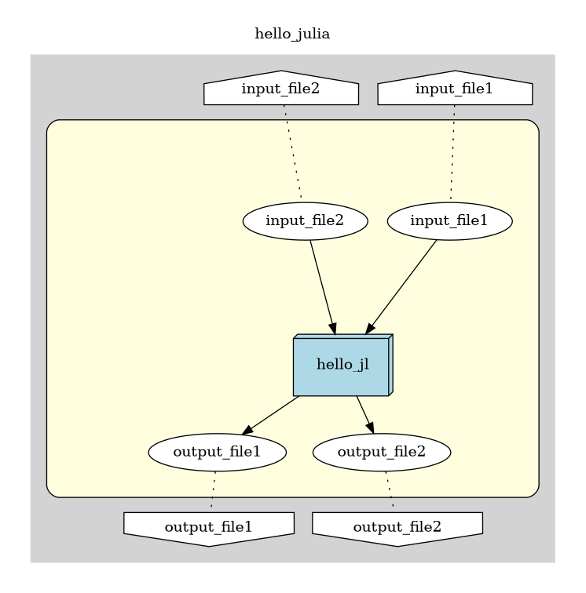

DistributedWorkflows.jl
- Workflow
- How to use scripts for efficient applications and workflow generation
- Instructions on how to use a serializer different than Julia's inbuilt serializer
- Available features in the public API
- How to write your applications
- Examples
- DistributedWorkflows.jl
- Locally test your applications
- Troubleshooting
Overview
This package is a Julia interface to a distributed task-based workflow management system. At the moment, we recommend it for long running processes. In the new updates, we are striving to make it available for all sorts of runs.
How to cite DistributedWorkflows.jl
Please cite this package as follows if you use it in your work:
@misc{DistributedWorkflows,
author = {Dastur, Firoozeh and Zeyen, Max and Rahn, Mirko},
title = {DistributedWorkflows.jl - A Julia interface to a distributed
task-based workflow management system},
year = {2024},
month = {January},
howpublished = {\url{https://github.com/FiroozehDastur/DistributedWorkflows.jl}}
}Initial setup
- DistributedWorkflows.jl requires the package manager Spack to install necessary binaries. Follow the steps from Spack - Getting Started to install Spack. You might also want to read Spack - Basic Usage to learn basic usage of Spack.
If you already have Spack installed and sourced in your path, then you may skip the above step.
- Next, download the respective binary for your system from the following: Binaries for DistributedWorkflows.jl.
The binaries are all built for the x86_64_v3 architechture
Once the installation is complete, navigate to the directory where you saved your binary file and install it in a target location of your choice as follows:
./distributedworkflow_myOS --target zeda
Replace
myOswith the specific name of the Linux distribution from the downloaded binary. For example, if you downloaded the binary file for Ubuntu 22, then you can run./distributedworkflow_ubuntu22 --target zeda.You are free to choose any other target location besides
zeda.
If the installation was successful, then running the following should load the required dependencies of
DistributedWorkflows.jl.spack load distributedworkflowYou can check the loaded packages by running:
spack find --loadedIf you would like to visualise the workflows before compilation, it is advised to download Graphviz to be able to visualise it in different formats.
Now, we are set up to use DistributedWorkflows.jl to parallelise our application.
Installation
Once this package is registered at it can be installed similar to any Julia package by doing:
import Pkg; Pkg.add("DistributedWorkflows")For now, doing the following should work:
Once you have the Julia REPL open, enter the package mode of julia and add the github repo as follows:
] add https://github.com/FiroozehDastur/DistributedWorkflows.jl.gitOnce the package administrator has installed
DistributedWorkflows, it can be loaded like any other Julia package by runningusing DistributedWorkflowsin the Julia REPL.
How to use DistributedWorkflows.jl
To use DistributedWorkflows to parallelise an application, the following steps are required:
- Setting up your Julia application structure.
- Designing a workflow in the form of a Petri net.
- A serializer descriptor. If you are using Julia's default serializer then you can skip this step.
- Setting up the workflow launcher.
- Compile and execute.
A simple "Hello world" example
With the following example, we demonstrate the usage with a simple "Hello World" example.
Assuming that we use Julia's native serializer, let's say we have the following Julia code to run:
function hello_julia(In1, In2)
a1 = In1 * 2;
a2 = In2 - 3;
str = ["if you are reading this, then your application worked..."]
arr = [a1, a2]
g = gcd(arr)
ar = [(In1, In2, a1, a2, g)]
return [str, ar]
endIt could be stored in a file, say hello.jl. Based on this piece of code we can see that the workflow is a Petri net with 2 input places, 1 transition, and 2 output places.
The Petri net can now be constructed as follows:
# A Petri net with 2 input places and 2 output places
# create an empty Petri net called "hello_julia"
pn = PetriNet("hello_julia")
# create the input and output places
p1 = place("input_file1")
p2 = place("input_file2")
p3 = place("output_file1")
p4 = place("output_file2")
# add a transition
t = transition("hello_jl")
# connect all the places and transitions based on their connection type to the Petri net
connect(pn,[(p1, :in),(p2, :in),(p3, :out), (p4, :out)], t)
# Alternatively, each place and transition can be connected individually, as shown below:
#
# connect(pn, p1, :in)
# connect(pn, p2, :in)
# connect(pn, p3, :out)
# connect(pn, p4, :out)
# generate the workflow in the folder "tmp" under the home directory.
wf = generate_workflow(pn)To visualise the workflow before generating the XML format of it, run view_workflow(pn). This would generate the following image as a PNG in a default location.

To visualise the workflow in one of the other formats and a specific path use view_workflow(pnet::PetriNet, format::Symbol, path::String). For example, view_workflow(pn, :svg, "home/usr/zeda/net") generates an SVG of the above Petri net and stores it in the path home/usr/zeda/net.
The renderer works best if you have graphviz installed on your system. For Ubuntu 22 you can do apt install graphviz to install it.
The number of transitions coincide with the number of Julia methods to execute. Each input/output token corresponds to a string containing the file name where data is stored.
Testing the example locally
Assuming that you have a workflow Petri net stored in an accessible location, use the following function to compile the workflow:
compile_workflow(<workflow-name>.xpnet, "/path/to/build/location")Next, start the client using
client(<number-of-workers>, "/path/to/nodefile", "rif-strategy")As a next step, it is advisible to create a script with your workflow configuration (see the executor files in the examples folder), and submit your application using the submit_workflow() function.
Once your application runs through, the output files will be stored in your desired output location.
Features
- Serializer agnostic, for details see custom serialize section in the documentation.
- Reduced complexity in deploying your parallel application.
- Localised testing of workflow, before launching expensive cluster resources.
- Write your own
xpnetfile and compile your workflow using thecompile_workflow()function. - You could also, generate a Petri net in Julia using
PetriNet()and generate thexpnetfile from the Petri net usinggenerate_workflow()before compiling it. - Visualise Petri net within the Julia REPL in multiple formats.
Shortcomings
At the moment, this package is only efficient and recommended for long running processes.
Due to the underlying workflow manager, this package only supports the following operating systems:
* Ubuntu 20.04 LTS * Ubuntu 22.04 LTSHowever, we have provided binaries to some additional distributions that we are testing against. In case of any problems related to installation or setup, please get in touch with us.
What's next?
Create your own application and use DistributedWorkflows to create your first Petri net workflow, run and test you application locally before acquiring cluster resources.
See also
Appendix
The underlying workflow management system is called GPI-Space which is a task-based workflow management system for parallel applications developed at Fraunhofer ITWM by the CC-HPC group.